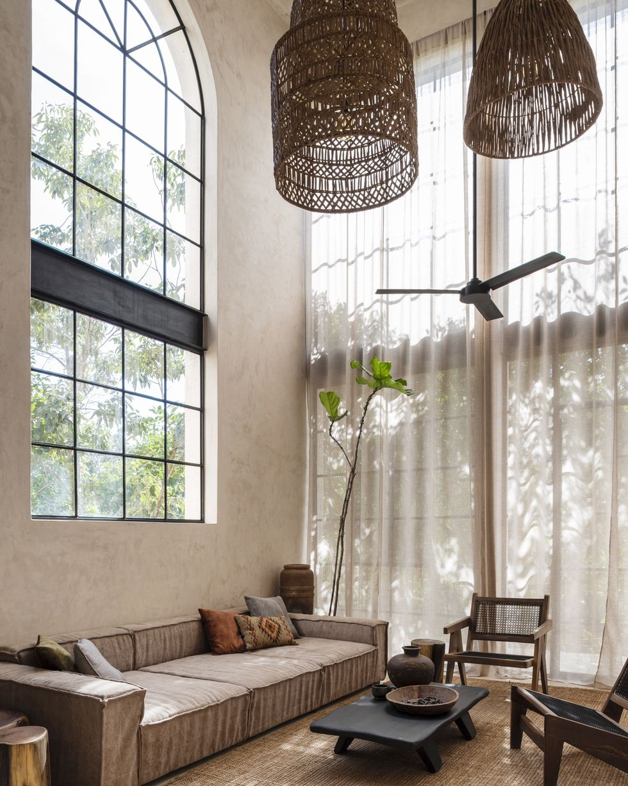
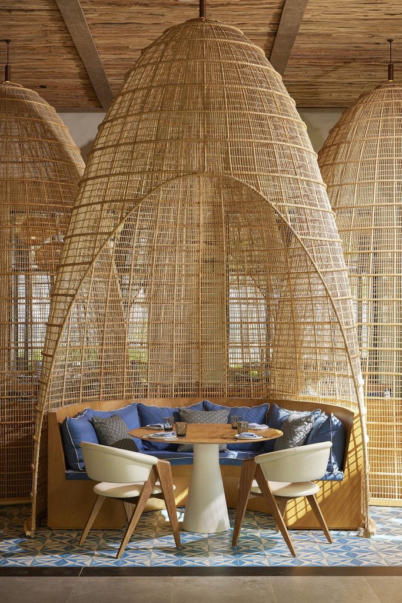
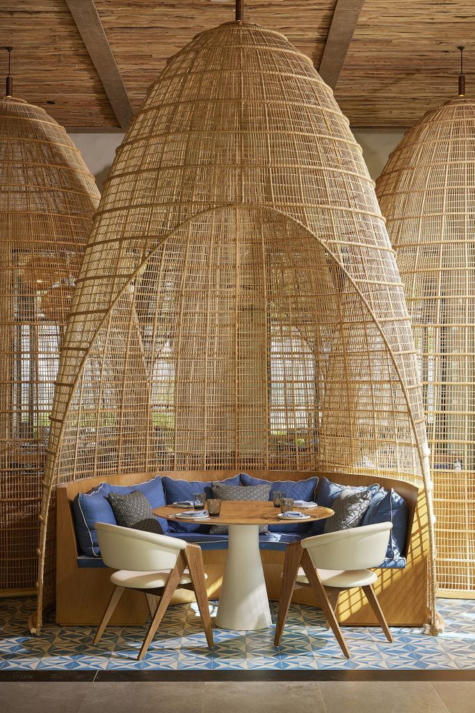
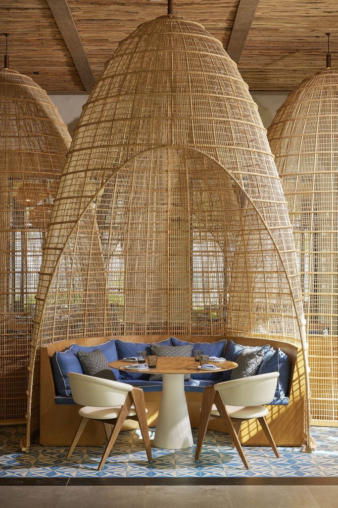
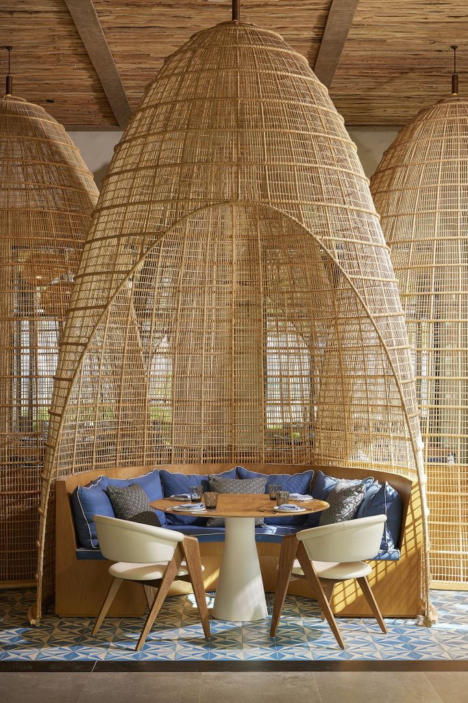

Lamp
Inspired by the visuals of Tulu and the incoming summer, I wanted to create an airy, minimal design with the following inspiration:

 


I'm playing around with different styles of web design. Prepare for these to change weekly.
I pulled concepts from Thingiverse of a Q-tip organizer and a panther. The q-tip dispenser is essentially a jar with a lid so I kept the cylinder as is but altered the lid so that the panther head replaced the knob on the lid. This was done by copying the panther into the same file as the lid and removing the body using the following commands: boolean difference, boolean union, points on, boolean difference (OG)+New Mesh box = done. The files are as follows:
Panther Head on Lid, file type .3dm
I am happy to report that it passed the rapid prototype test.
Inspired by the visuals of Tulu and the incoming summer, I wanted to create an airy, minimal design with the following inspiration:

File: Lamp Take 1, file type .3dm
A 37.32 base